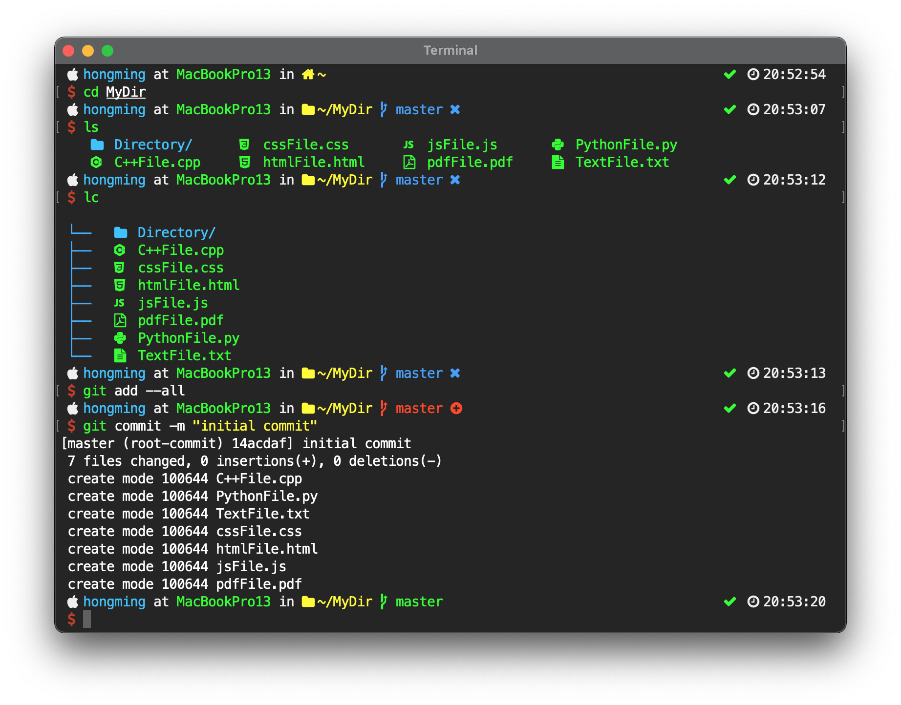

This post is to keep my terminal customization and configuration files so that I can quickly rebuild my terminal in other machine. The fowllowing picture is a snapshop of my termainl, feel free to use my terminal configuration.

We are going to use Zsh as the terminal shell. To install zsh on Mac, run the follwoing commands.
$ brew install zsh
Change default shell to zsh.
$ chsh -s /usr/local/bin/zsh
On My Zsh is a framework for zsh. It makes easier to manage your zsh configuration. However, after few years of usage, I realized that I don't need to use the whole framework, and all I need are some of its .zsh files and plugins. Therefore, I prefer just load its .zsh files and plugins I need using zinit instead of installing and loading the whold framework. The following is an example of loading completion.zsh library file and colored-man-pages plugins using zinit in .zshrc.
zinit lucid light-mode for \
OMZL::completion.zsh \
OMZP::colored-man-pages
If you want to use the whole framework, do the following steps. On My Zsh can be installed from curl or wget.
Install curl or wget
$ brew install curl # install curl
$ brew install wget # install wget
Install On My Zsh from curl or wget
$ sh -c "$(curl -fsSL https://raw.githubusercontent.com/ohmyzsh/ohmyzsh/master/tools/install.sh)" # for curl
$ sh -c "$(wget -O- https://raw.githubusercontent.com/ohmyzsh/ohmyzsh/master/tools/install.sh)" # for wget
Finally, put the follwing code into .zshrc to source the On My Zsh framework.
export ZSH=$HOME/.oh-my-zsh
source $ZSH/oh-my-zsh.sh
I use Hack Regular Nerd Font Complete or Meslo LG M Regular Nerd Font Complete in my terminal, both with size 14. For Mac user, recommended to only install fonts that you want to use from homebrew. To install a specific type of font in Nerd Fonts, run the follwoing command in your terminal
$ brew tap homebrew/cask-fonts && brew install --cask font-<FONT NAME>-nerd-font
For example, to install Hack Nerd Font
$ brew tap homebrew/cask-fonts && brew install --cask font-hack-nerd-font
To install Meslo LG Nerd Font
$ brew tap homebrew/cask-fonts && brew install --cask font-meslo-lg-nerd-font
Homebrew is a package manager for Mac, just like apt-get in Debian based linux systems, rpm in Red Hat-ish Linux systems and yum in RedHat based systems.
Install Homebrew from curl
$ /bin/bash -c "$(curl -fsSL https://raw.githubusercontent.com/Homebrew/install/HEAD/install.sh)"
To speed up the loading time for plugins, I choose to use Zinit as my plugin manager. Note that it's better to not use on my zsh to load all your plugins if you use a lot of plugins in your termianl (like me ), because it will slow down the terminal loading time.
To install Zinit, run the following command.
$ sh -c "$(curl -fsSL https://raw.githubusercontent.com/zdharma/zinit/master/doc/install.sh)"
See Zinit wiki for detail usage.
-
colorls
This package coloralized the ls command. This package requires Ruby and Nerd Fonts. Installed it through Ruby gem. To install gem
$ brew install rubyIMPORTANT!: remember to set up your ruby and gem path in .zshrc to have the ruby installed from homebrew first in your PATH (run brew info ruby to see more information), do not use the system ruby to install colorls. To install colorls
$ gem install colorlsTo customize the folders' and files' icon, run the following in terminal to get the customization files.
$ cp -r $(dirname $(gem which colorls))/yaml ~/.config/colorlsI have done some customization on the icons. To use my customization, replace ~/.config/colorls/folders.yaml and ~/.config/colorls/files.yaml with this folders.yaml and files.yaml respectively.
Put an alias into .zshrc to overwrite the default command.
alias ls="colorls -X --dark --sort-dirs" alias lc="colorls -X --tree --dark" -
bat
This package coloralized the cat command. For Mac user, recommended install it through homebrew
$ brew install batPut an alias into .zshrc to overwrite the default command.
alias cat="bat --paging=never" -
trash-cli
This package moves files into system trash can after running rm command. Installed it through Node Package Manager npm. To install npm and trash-cli
$ brew install node $ npm install --global trash-cliPut an alias into .zshrc to overwrite the default command.
alias rm="trash"
The following plugins can all be downloaded and loaded from zinit. Note that if you use plugins that are not written in shell of have other dependency, you might have to install it from package manager first. For example, one of the famous oh my zsh plugin, autojump, has python dependency, so it has to be installed from homebrew before being loaded from zinit. To see more details of loading plugins, see .zshrc for reference.
-
powerlevel10k
Powerlevel10k is a highly customizable theme for Zsh. This theme support instant prompt, add the follwing code into .zshrc to enable to instant prompe.
if [[ -r "${XDG_CACHE_HOME:-$HOME/.cache}/p10k-instant-prompt-${(%):-%n}.zsh" ]]; then source "${XDG_CACHE_HOME:-$HOME/.cache}/p10k-instant-prompt-${(%):-%n}.zsh" fiTo customize terminal's prompt, icon, color, etc. Add Powerlevel9k configuration options into .zshrc or run p10k configure command in terminal. An example of Powerlevel9k configuration options code can be found in my .zshrc
-
zsh-history-substring-search
This plugin provides the similar clean-room implementation of the Fish shell's history search feature.
-
zsh-syntax-highlighting
This plugin provides syntax highlighting for Zsh.
-
zsh-autosuggestions
This plugin suggests commands as you type based on history and completions.
-
zsh-completions
This plugin provides additional completion definitions for Zsh.
-
zaw
This plugin provides searching utility for aliases, commands, history, files, etc, for zsh.
-
z
This plugin provides a faster way to navigate your filesystem.
-
zsh-colored-man-pages
This plugin adds colors to man pages. Note that there is a similar plugin colored-man-pages from oh my zsh, but this plugin might not work properly if you don't use oh my zsh.
# If you come from bash you might have to change your $PATH.
export PATH="/usr/local/bin:$PATH"
# Python path
export PATH="/usr/local/opt/python@3.9/libexec/bin:$PATH"
# Ruby path
export PATH="/usr/local/opt/ruby/bin:$PATH"
# Gem path
export PATH="/usr/local/lib/ruby/gems/3.0.0/bin:$PATH"
# Homebrew
export PATH="/usr/local/sbin:$PATH"
# Uncomment the following line to use case-sensitive completion.
# CASE_SENSITIVE="true"
# Uncomment the following line to use hyphen-insensitive completion. Case
# sensitive completion must be off. _ and - will be interchangeable.
# HYPHEN_INSENSITIVE="true"
# Uncomment the following line to display red dots whilst waiting for completion.
COMPLETION_WAITING_DOTS="true"
# Uncomment the following line if you want to change the command execution time
# stamp shown in the history command output.
# The optional three formats: "mm/dd/yyyy"|"dd.mm.yyyy"|"yyyy-mm-dd"
HIST_STAMPS="yyyy-mm-dd"
# Powerlevel10k instant prompt
if [[ -r "${XDG_CACHE_HOME:-$HOME/.cache}/p10k-instant-prompt-${(%):-%n}.zsh" ]]; then
source "${XDG_CACHE_HOME:-$HOME/.cache}/p10k-instant-prompt-${(%):-%n}.zsh"
fi
# Colorls
source $(dirname $(gem which colorls))/tab_complete.sh
# Zinit
source "$HOME/.zinit/bin/zinit.zsh"
autoload -Uz _zinit
(( ${+_comps} )) && _comps[zinit]=_zinit
# Load a few important annexes, without Turbo
zinit light-mode for \
zinit-zsh/z-a-rust \
zinit-zsh/z-a-as-monitor \
zinit-zsh/z-a-patch-dl \
zinit-zsh/z-a-bin-gem-node
# Load oh my zsh lib file
zinit lucid light-mode for \
OMZL::completion.zsh \
OMZL::history.zsh \
OMZL::key-bindings.zsh \
OMZL::directories.zsh
# Load Powerlevel10 theme
zinit ice depth=1
zinit light romkatv/powerlevel10k
# Load zsh completions, syntax-highlighting add autosuggestions
zinit ice blockf atpull="zinit creinstall -q ."
zinit light zsh-users/zsh-completions
autoload compinit
compinit
# Load remaining plugins
zinit lucid light-mode for \
ael-code/zsh-colored-man-pages \
agkozak/zsh-z \
supercrabtree/k \
zsh-users/zaw \
zsh-users/zsh-autosuggestions \
zsh-users/zsh-syntax-highlighting \
zsh-users/zsh-history-substring-search
# Set personal aliases
alias matlab="/Applications/MATLAB_R2019a.app/bin/matlab -nodesktop -nosplash"
alias cat="bat --paging=never"
alias rm="trash"
alias l="colorls -XAlog --dark --sort-dirs"
alias ll="colorls -Xlog --dark --sort-dirs"
alias ls="colorls -X --dark --sort-dirs"
alias lc="colorls -X --tree --dark"
alias j="z"
# Format for time command
TIMEFMT=$'\nreal\t%E\nuser\t%U\nsys\t%S'
# Zsh-syntax-highlighting format
ZSH_HIGHLIGHT_HIGHLIGHTERS=(main brackets)
ZSH_HIGHLIGHT_STYLES[bracket-level-1]='fg=magenta'
ZSH_HIGHLIGHT_STYLES[bracket-level-2]='fg=magenta'
ZSH_HIGHLIGHT_STYLES[bracket-level-3]='fg=magenta'
ZSH_HIGHLIGHT_STYLES[bracket-level-4]='fg=magenta'
ZSH_HIGHLIGHT_STYLES[bracket-level-5]='fg=magenta'
# Powerlevel10k format code
# Icon
POWERLEVEL9K_MODE='nerdfont-complete'
POWERLEVEL9K_OS_ICON='\uf179'
POWERLEVEL9K_APPLE_ICON='\uf179'
POWERLEVEL9K_PYTHON_ICON='\ue606'
POWERLEVEL9K_HOME_ICON='\uf015'
POWERLEVEL9K_HOME_SUB_ICON='\uf07b'
POWERLEVEL9K_FOLDER_ICON='\uf07b'
POWERLEVEL9K_ETC_ICON='\uf013'
POWERLEVEL9K_LOCK_ICON='\uf023'
POWERLEVEL9K_OK_ICON='\uf00c'
POWERLEVEL9K_FAIL_ICON='\uf00d'
POWERLEVEL9K_CARRIAGE_RETURN_ICON='\uf00d'
POWERLEVEL9K_LEFT_SEGMENT_END_SEPARATOR=''
POWERLEVEL9K_LEFT_SEGMENT_SEPARATOR=''
POWERLEVEL9K_LEFT_SUBSEGMENT_SEPARATOR=''
POWERLEVEL9K_TIME_ICON=''
POWERLEVEL9K_RIGHT_SUBSEGMENT_SEPARATOR=''
POWERLEVEL9K_RIGHT_SEGMENT_SEPARATOR=''
POWERLEVEL9K_VCS_GIT_ICON=''
POWERLEVEL9K_VCS_GIT_GITHUB_ICON=''
POWERLEVEL9K_VCS_GIT_GITLAB_ICON='\uf296'
POWERLEVEL9K_VCS_INCOMING_CHANGES_ICON='\uf01a '
POWERLEVEL9K_VCS_OUTGOING_CHANGES_ICON='\uf01b '
POWERLEVEL9K_VCS_BRANCH_ICON='\ue0a0 '
POWERLEVEL9K_VCS_STAGED_ICON='\uf055'
POWERLEVEL9K_VCS_UNSTAGED_ICON='\uf06a'
POWERLEVEL9K_VCS_UNTRACKED_ICON='\uf00d'
# Prompt in new line
POWERLEVEL9K_PROMPT_ON_NEWLINE="true"
# Prompt in first and second line
POWERLEVEL9K_MULTILINE_FIRST_PROMPT_PREFIX=""
POWERLEVEL9K_MULTILINE_LAST_PROMPT_PREFIX="%{%F{red}%} \uf155 %{%F{white}%}"
# OS
POWERLEVEL9K_OS_ICON_BACKGROUND="none"
POWERLEVEL9K_OS_ICON_FOREGROUND="white"
# CONTEXT
POWERLEVEL9K_CONTEXT_TEMPLATE="%{%F{039}%}%n%{%F{white}%} at %{%F{010}%}%m%{%F{white}%} in"
POWERLEVEL9K_CONTEXT_DEFAULT_BACKGROUND="none"
POWERLEVEL9K_CONTEXT_DEFAULT_FOREGROUND="white"
# DIR
POWERLEVEL9K_DIR_HOME_BACKGROUND="none"
POWERLEVEL9K_DIR_HOME_FOREGROUND="011"
POWERLEVEL9K_DIR_HOME_SUBFOLDER_BACKGROUND="none"
POWERLEVEL9K_DIR_HOME_SUBFOLDER_FOREGROUND="011"
POWERLEVEL9K_DIR_ETC_BACKGROUND="none"
POWERLEVEL9K_DIR_ETC_FOREGROUND="011"
POWERLEVEL9K_DIR_DEFAULT_BACKGROUND="none"
POWERLEVEL9K_DIR_DEFAULT_FOREGROUND="011"
POWERLEVEL9K_SHORTEN_DIR_LENGTH="40"
POWERLEVEL9K_SHORTEN_STRATEGY="truncate_absolute_chars"
# VCS
POWERLEVEL9K_VCS_MODIFIED_BACKGROUND="none"
POWERLEVEL9K_VCS_MODIFIED_FOREGROUND="009"
POWERLEVEL9K_VCS_UNTRACKED_BACKGROUND="none"
POWERLEVEL9K_VCS_UNTRACKED_FOREGROUND="033"
POWERLEVEL9K_VCS_CLEAN_BACKGROUND="none"
POWERLEVEL9K_VCS_CLEAN_FOREGROUND="010"
# Anaconda
POWERLEVEL9K_ANACONDA_BACKGROUND="none"
POWERLEVEL9K_ANACONDA_FOREGROUND="010"
POWERLEVEL9K_ANACONDA_LEFT_DELIMITER=""
POWERLEVEL9K_ANACONDA_RIGHT_DELIMITER=""
# DIR_WRITABLE
POWERLEVEL9K_DIR_WRITABLE_FORBIDDEN_BACKGROUND="none"
POWERLEVEL9K_DIR_WRITABLE_FORBIDDEN_FOREGROUND="009"
# STATUS
POWERLEVEL9K_STATUS_CROSS="true"
POWERLEVEL9K_STATUS_OK_BACKGROUND="none"
POWERLEVEL9K_STATUS_OK_FOREGROUND="010"
POWERLEVEL9K_STATUS_ERROR_BACKGROUND="none"
POWERLEVEL9K_STATUS_ERROR_FOREGROUND="009"
# TIME
POWERLEVEL9K_TIME_BACKGROUND="none"
POWERLEVEL9K_TIME_FOREGROUND="white"
POWERLEVEL9K_TIME_FORMAT="\uf017 %D{%H:%M:%S}"
# Prompt element
POWERLEVEL9K_LEFT_PROMPT_ELEMENTS=(os_icon context_joined dir_joined vcs_joined anaconda_joined)
POWERLEVEL9K_RIGHT_PROMPT_ELEMENTS=(dir_writable status time)
.atom: "\ue764"
.git: "\uf1d3"
.github: "\uf408"
.rvm: "\ue21e"
.Trash: "\uf1f8"
.vscode: "\ue70c"
config: "\ue5fc"
folder: "\uf07b"
hidden: "\uf023"
lib: "\uf121"
node_modules: "\ue718"
ai: "\ue7b4"
android: "\ue70e"
apple: "\uf179"
audio: "\uf001"
avro: "\ue60b"
c: "\ue61e"
clj: "\ue768"
coffee: "\uf0f4"
conf: "\ue615"
cpp: "\ue61d"
css: "\ue749"
d: "\ue7af"
dart: "\ue798"
db: "\uf1c0"
diff: "\uf440"
doc: "\uf1c2"
docker: "\uf308"
ebook: "\ue28b"
env: "\uf462"
epub: "\ue28a"
erl: "\ue7b1"
file: "\uf15b"
font: "\uf031"
gform: "\uf298"
git: "\uf1d3"
go: "\ue626"
gruntfile.js: "\ue74c"
hs: "\ue777"
html: "\uf13b"
image: "\uf1c5"
iml: "\ue7b5"
java: "\ue204"
js: "\ue74e"
json: "\ue60b"
jsx: "\ue7ba"
less: "\ue758"
log: "\uf18d"
lua: "\ue620"
md: "\uf48a"
mustache: "\ue60f"
npmignore: "\ue71e"
pdf: "\uf1c1"
php: "\ue73d"
pl: "\ue769"
ppt: "\uf1c4"
psd: "\ue7b8"
py: "\ue606"
r: "\uf25d"
rb: "\ue21e"
rdb: "\ue76d"
rss: "\uf09e"
rubydoc: "\ue73b"
sass: "\ue603"
scala: "\ue737"
shell: "\uf489"
sqlite3: "\ue7c4"
styl: "\ue600"
v: "\uf493"
sv: "\uf493"
tex: "\ue600"
ts: "\ue628"
twig: "\ue61c"
txt: "\uf15c"
video: "\uf03d"
vim: "\ue62b"
windows: "\uf17a"
xls: "\uf1c3"
xml: "\ue619"
yarn.lock: "\ue718"
yml: "\uf481"
zip: "\uf410"